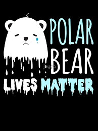
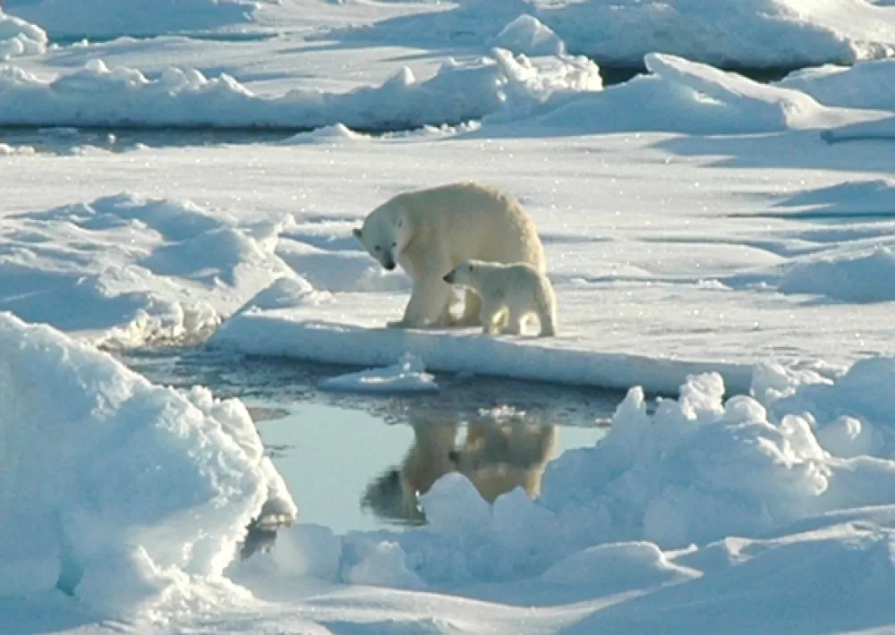

|  |
Kutuplar EriyorKüresel ısınma, Kuzey Kutbu‘nu dünyanın diğer bölgelerine göre dört kat daha hızlı etkiliyor. Bu aynı zamanda pek çok canlının da yaşam alanlarını kaybetmesi demek. Bu canlılardan biri olan kutup ayılarının yaşam ve avlanma alanı olan deniz buzu, yavaş yavaş yok oluyor. Uzmanlar, kutup ayılarının temel besin kaynağı olan fokları avlayabilmek için ihtiyacı olan deniz buzunun oluşması için artık bir ay daha fazla beklemek zorunda olduğuna dikkat çekti. Kuzey Kutbu’nda her yıl deniz buzu Haziran ayının sonundan itibaren ortadan kalkar ve Kasım ayına doğru yeniden oluşur. Bu sürede kutup ayıları mecburen karasal kıyılarda yaşamaya çekilir ve ana besin kaynağına ulaşmak için buzun yeniden oluştuğu zamana kadar çok küçük balıklarla veya -nadiren- leşlerle beslenir. Ancak günümüz kutup ayıları, bir önceki nesillerine göre bu buzun oluşması için bir ay daha fazla beklemek zorun... [yesilgazete.org (Kalanı için tıklayınız.)] |
 |